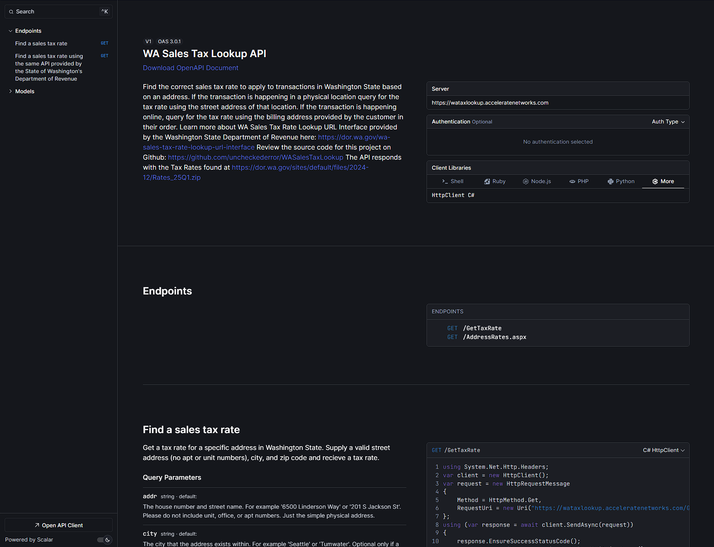

A New WA Sales Tax Lookup API for a New Year
I’ve decided that now is the time to modernize the WA Sales Tax Lookup API. You can try it out in the new interactive docs, see the updated landing page, and clone the repo to run it locally for testing or deploy it to your infrastructure.
Originally, I released the WA Sales Tax Lookup project on Github in late March of 2021. The initial motivation was that .NET 5’s HTTPClient was throwing an exception when we called the API endpoint that the State’s Department of Revenue provides. Essentially the SSL certificate they were using was so old that HTTPClient considered it invalid even though you could query it just fine from Chrome or Postman.
The State offered the source code of their API so that enterprising sales tax rate consumers could self-host the project. As I was curious about my options I reviewed the source code, realized it was written in C# (the language I use for my day job) and grimaced when I saw that it was still a .NET Framework project. This was a problem that affected me personally, I had the source code I needed to solve it, and I had the right skills and experience to get it done.
Creating an Alternative
I created the WA Sales Tax Lookup project using the Web API template in .NET 5. This template used the concept of Controllers to organize routes and their functions, stylistically it’s like a stripped-down version of the Model-View-Controller or MVC template common in ASP.NET web apps. With the release of .NET 6 the following year, Microsoft introduced Minimal APIs as a new project type that dispensed with the structure and ceremony of MVC-style projects. Initially I rejected moving to this new project type as I was unfamiliar with it and the Sales Tax API was chugging along just fine.
Often showing this kind of related information from a spatial query directly on a map can be confusing and hard to parse due to the density of the information. There are a couple of methods to solve this problem in a Parcel Viewer like placing a small table inside of a popup that appears when you click on a parcel. Alternatively, you can link from your parcel to another app or web page that presents this information as a table or series of tables. This is often found when the Assessor or Recorder is in a separately elected position (with its own IT staff) distinct from the elected officials that control the County’s IT or GIS groups. Personally, my favorite solution is to take the left third of the screen and use it as a scrollable column of tables containing this related information like Zillow or Redfin. This allows you to maintain the context of the map, quick switching between Parcel’s of interest, while getting the detailed tabular information in a decent visual format.
With the arrival of .NET 9 this past November I spent a fair amount of time trying to improve my skills with Span<T> to minimize memory usage and readonly record structs for small short-lived types. Somewhere in the miasma of updating all my projects to .NET 9 and rethinking my apps through the lens of memory consumption I decided that it was time to modernize the WA Sales Tax Lookup API.
Starting with Fresh Tools
I started by creating a new project in Visual Studio 2022 using the using the ASP.NET Core Web API template which defaults to the Minimal API project style. Then I wrote stubs for the API endpoints I wanted, copied over the supporting Models and Services from the old project, and then finally copied the contents of the Controller in the old project into my new stubbed-out endpoints. With the basics of the project successfully completed I turned to dealing with the documentation.
Developer Experience
For APIs the documentation is make or break when onboarding new users. If the docs are bad, then the API might as well not exist. For .NET apps SwaggerUI has largely solved this problem by providing interactive documentation that is automatically generated from your code. You can enhance this documentation by providing field and endpoint descriptions that are then dumped into the OpenAPI document that SwaggerUI consumes.
.NET 9 there’s a new alternative to SwaggerUI called Scalar. This is a cool option for improving the API docs as Scalar provides example code for calling endpoints in many different programming languages. For fresh developers figuring out how to use your API has as much of a learning curve as calling your API using the HTTP Client library in their language of choice. These language specific code snippets short cut that stumbling block by giving you just enough to get pointed in the right direction.
Scalar also provides a dark mode, which everyone loves, and a UI that looks more like Github than SwaggerUI does. This is not to dunk on SwaggerUI; it works well and looks good, but Scalar is perhaps a bit better.
Startup Performance
With a new project style and fresh docs, it was time to turn my attention simplifying the workflow of matching a sales tax rate to an address. In the initial version of this app we ingested address ranges, zip codes, and the tax rates from zipped CSV files just as the State’s project did. For convenience I loaded the contents of these files into an SQLite 3 database using the Entity Framework Core Object-Relational Mapper (ORM).
This architectural decision hurt startup performance as we had to download, unzip, serialize, and then save each row into our database before the API could start responding to requests. In early versions of the app this would take 10 minutes and up to 4 GBs of memory for the ingest process to complete. By streaming the records and using ADO.NET transactions to insert rows into SQLite I was able to get this down to 6 minutes and about 1.3 GBs of memory consumption. That was enough for my purposes, and I moved on.
In the new WA Sales Tax Lookup I’ve done away with SQLite completely. Instead, I’m using a type of collection introduced in .NET 8 called FrozenSet<T> which is immutable and optimized for data that’s read frequently but created only once. This means we no longer need a durable store of state like SQLite, which also rids us of the need to use our ORM, Entity Framework Core. Performance is also vastly improved as all the data is held in-memory. Ingesting the CSV’s from the Department of Revenue’s website now takes about 7 seconds rather than multiple minutes. Memory usage has also dropped slightly from 1.3 GBs to less than a gigabyte.
Rethinking the Workflow
But what if we didn’t need to ingest the CSV’s from the State’s website at all?
In my day job I do GIS Programming, a GIS is essentially a database where every row has a spatial component like a set of x, y coordinates or a polygon. A dataset we spend considerable time working with is called Address Points, these points map street address to a pair of x, y coordinates that you can place on a map.
A service that takes an address and returns to you the coordinates of that address point is called a Geocoder. If my little county government maintains its own geocoder then certainly the State must have one. Once we have the coordinates for the address then we then need to overlay it on a map of the Sales Tax polygons, which the State helpfully provides.
Different municipalities include their own local taxes in the Sales Tax rate, hence the need for this Sales Tax Lookup in the first place. Municipalities have jurisdictions, from those jurisdictions we can get polygons representing their boundaries and then we can figure out what tax rates apply to an address based on what polygon it exists inside of. The Department of Revenue calls the unique Id for these polygons a Location Codes or LOCODE. Using this Id, we can match to a Tax Rate row and return it to the user.
Forgive the long windedness of the prior section, but it’s important to be specific. The older version of this app needed the ZipCode CSV (170k rows) to match a zip code, then it filtered further using the AddressRanges CSV (1.2M rows) to get a specific LOCODE to match to a Tax Rate from the TaxRates CSV.
Using the State’s geocoder to get a coordinate for an Address and then using their map of LOCODE polygons we can grab the LOCODE value for the polygon that our point falls within and then match it directly to a Tax Rate. This rids us of the need for the first two CSVs and leaves us with only the TaxRates CSV (398 rows).
To support this implementation, I’ve added a configuration field to the appsettings.json file called EnableLegacy. If you set it to false only the JSON returning /GetTaxRate endpoint that uses this GIS lookup workflow will show up in the documentation and only the TaxRates CSV will be ingested from the State. The benefit is that memory consumption drops to merely 50 MBs. Startup time also improved from 13 seconds to just 4 seconds. The downside is that you no longer get the same XML or HTML formatted response that the Department of Revenue’s API provides. That legacy format is tied tightly to the rows in the ZipCode and AddressRange CSVs, so we cannot recreate it exactly. But you still get the correct tax rate information back, formatted as JSON.
Additionally, because the GIS lookup workflow calls the State’s GIS services to geocode the address and find the right location code polygon this API is now dependent on those external services. Luckily, those services are heavily used and at least as stable and reliable as this API.
A New API for a New Year
In sum basically every aspect of the WA Sales Tax Rate Lookup API has been enhanced from the developer experience to the hosting requirements to the raw performance of the tax rate lookups. I hope you enjoy using this project as much as I enjoyed building it. 🥳